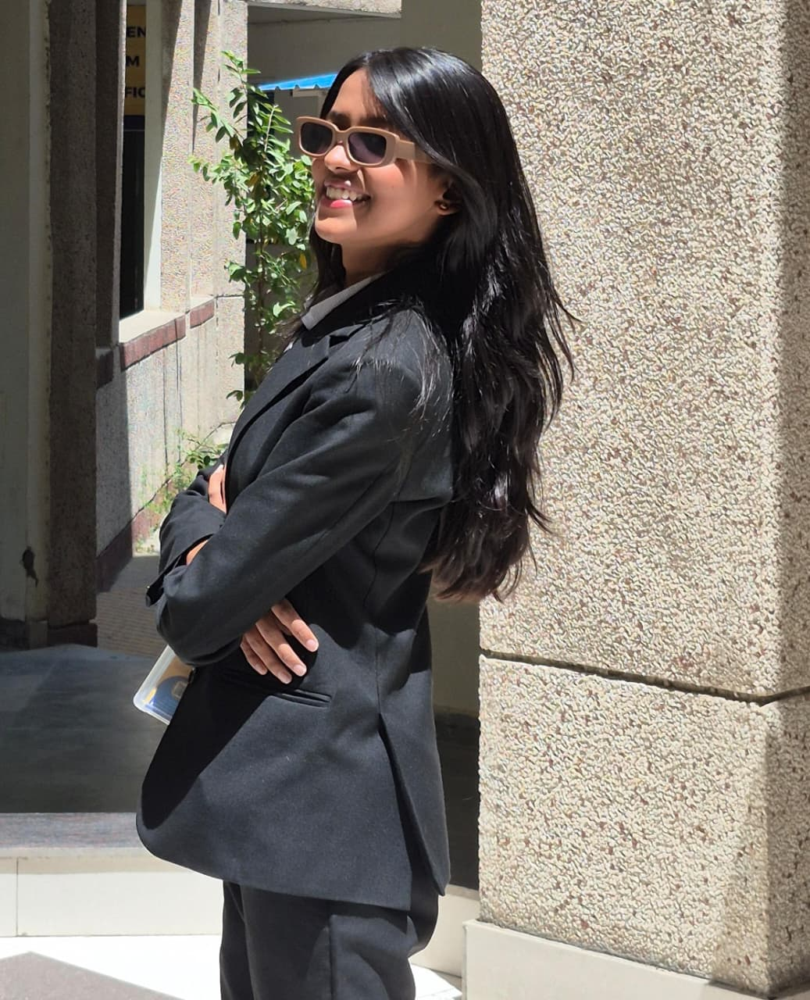
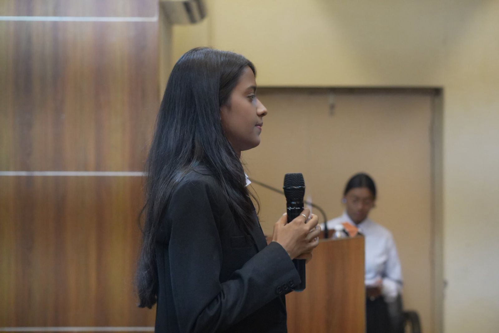
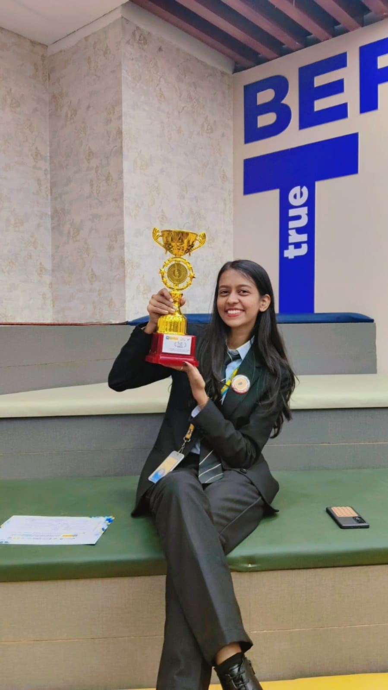
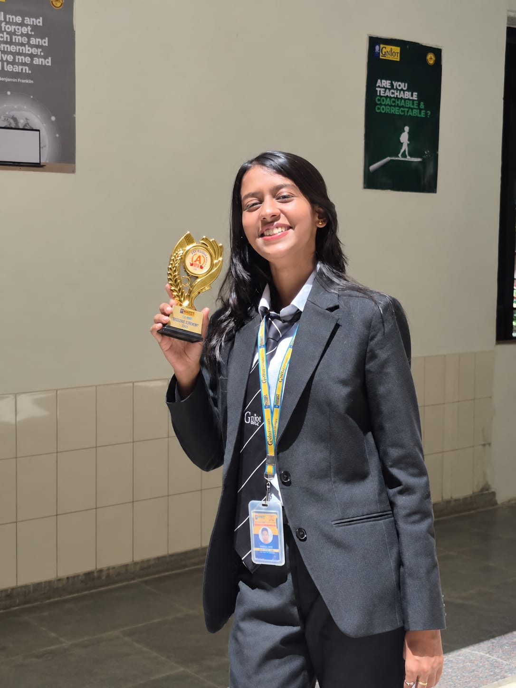

01
PYTHON
My primary programming language for turning ideas into working solutions and exploring data-driven problems.
PY
03RD YEAR • COMPUTER SCIENCE & DATA SCIENCE
I learn with curiosity, build with purpose,
and turn ideas into things people can use.

NOT JUST A RESUME
I’m Pragati, a third-year Computer Science & Data Science student who enjoys sitting at the intersection of analytical thinking, programming and real-world problem solving.
My journey has been shaped by a simple habit: whenever I learn something, I try to turn it into something tangible. From building an AI-powered meeting scheduler to working with data and completing industry-backed simulations, I’ve focused on learning through application rather than theory alone.
I’m also drawn to the human side of technology — presenting ideas, collaborating with people, and creating spaces where others can learn. For me, technical growth is not only about writing code; it is about asking better questions, communicating clearly and building things that matter.



I’m intentionally keeping my technical core focused — mastering the fundamentals I can use to understand data, solve problems and build useful solutions.
BUILDING WITH INTENT
PUBLISHED PROJECT • 2025
Designed to make meeting coordination more intelligent and convenient. The project combines scheduling, rescheduling and management into one experience, while exploring interaction through face authentication and gesture-based controls.
TEAM PROJECT
A concept focused on helping hackathon participants find compatible teammates through skill matching, project-idea matching and team compatibility scoring.
PROJECT TITANS • IIC
Secured 1st place in the Project Titans competition for project presentation / solution. A reminder that a good technical idea becomes stronger when you can explain it, defend it and make others believe in it.
Courses, simulations and publication — each one represents a different way of pushing beyond the classroom.
IF I JOIN THE TECHNICAL CLUB
Help create beginner-friendly sessions around Python, SQL and data analysis where students learn by solving real problems instead of only following slides.
Bring structured, project-oriented technical activities — from problem-solving sessions to showcase formats where students can actually demonstrate what they build.
Use communication and collaboration to connect students with different strengths and make technical teams more effective.
Encourage documentation, peer learning and sharing so one student's learning can become the starting point for someone else's.
Technology becomes more powerful when knowledge is shared, ideas are tested, and people build together.
Bishop Scott Senior Secondary Girls' School
Dr. D. V. Patel Pushpalata Patil International School
Greater Noida Institute of Technology (GNIOT) — currently in 3rd year
More projects. More learning. More people to learn with.
THANK YOU FOR LOOKING BEYOND THE RESUME.
For a technical club, I’m bringing curiosity, a focused technical core, a willingness to learn and the drive to turn ideas into experiences people remember.
START A CONVERSATION ↗